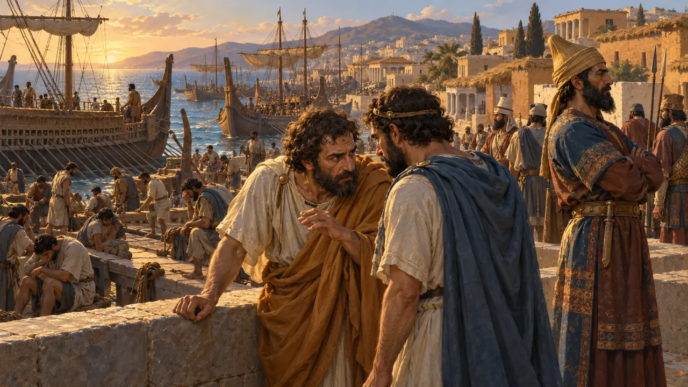
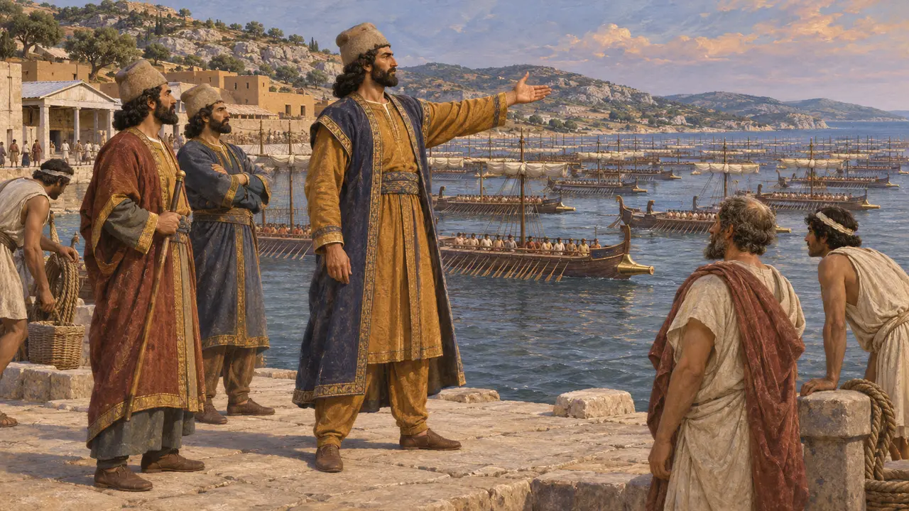
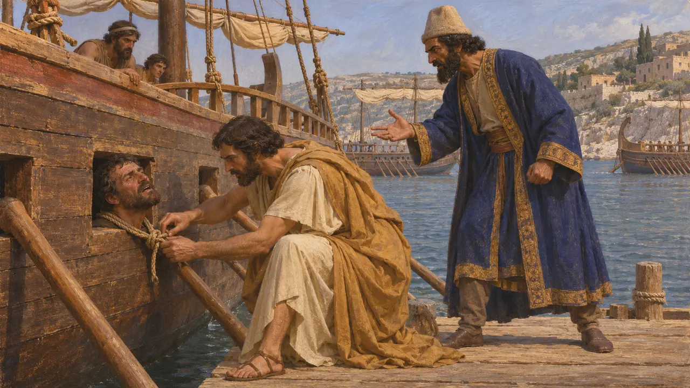
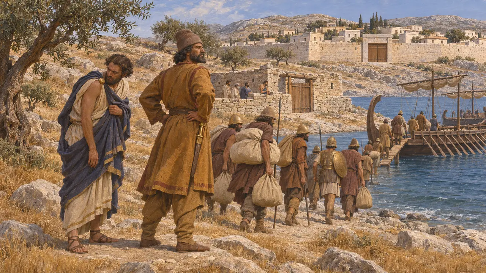
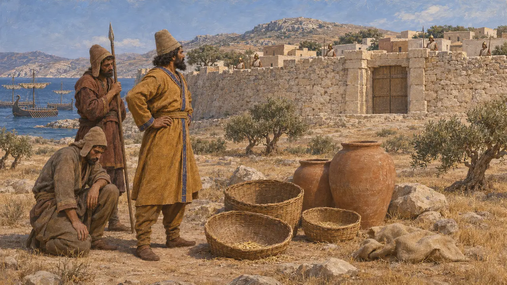
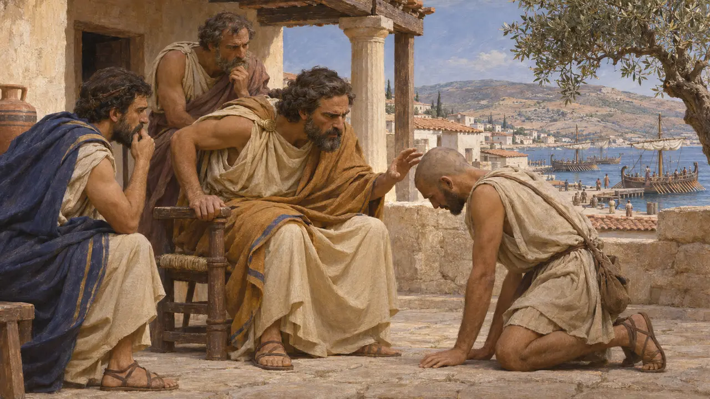

Мегабат
Персидский командующий флотом, посланным против Наксоса, около 500 г. до н. э.
Мегабат был персом из рода Ахеменидов и командовал союзным флотом при нападении на Наксос. По словам Геродота, он поссорился с Аристагором Милетским, а провал похода подтолкнул Аристагора к мятежу. Сколько-нибудь подробно эту историю рассказывает только Геродот.
В игре: У Мегабата нет собственной игровой механики. Он упоминается только в событийных статьях об осаде Наксоса и Ионийском восстании, где выступает как командующий персидским флотом.

Командующий флотом при Наксосе
Античное свидетельствоГеродот сообщает, что Аристагор, управлявший Милетом от имени персов, убедил сатрапа Артаферна напасть на Наксос. Дарий одобрил замысел, и командовать флотом из 200 кораблей был назначен Мегабат. Геродот называет его персом из рода Ахеменидов, родственником Дария.
Herodotus 5.30-32

Ссора с Аристагором
Античное свидетельствоГеродот сообщает, что Мегабат осматривал корабли и обнаружил судно из Минда, на котором не был выставлен часовой. Он приказал связать его капитана, Скилака Миндского, и просунуть его в отверстие для весла так, чтобы голова оказалась снаружи. Аристагор заступился и сам освободил этого человека, а Мегабат, разгневанный оскорблением, как говорят, известил наксосцев о готовящемся нападении.
Herodotus 5.33

Провал осады
Античное свидетельствоНаксосцы были заранее предупреждены, перенесли свои пожитки за стены и приготовились к осаде. По словам Геродота, персы осаждали город четыре месяца, израсходовали свои средства и средства самого Аристагора, а затем отступили, выстроив крепости для наксосских изгнанников. Аристагор не смог выплатить обещанного и боялся гнева Царя.
Herodotus 5.34

Насколько надёжен этот рассказ
СпорныйПредание о личной вражде делает Мегабата виновником неудачи, но современные историки сомневаются, что одна ссора объясняет столь значительное событие. Возможно, оно отражает традицию, которая переложила вину на перса, а четырёхмесячная осада, сорванная нехваткой припасов и упорной обороной, вполне правдоподобна и без всякой измены.
P. Briant, From Cyrus to Alexander, 2002

Последствия
Античное свидетельствоГеродот не прослеживает судьбу Мегабата после Наксоса. По его словам, Аристагор, опасаясь последствий, получил от Гистия послание с призывом к восстанию, и так началось Ионийское восстание.
Herodotus 5.35
Источники
- Herodotus 5.30-35
- P. Briant, From Cyrus to Alexander, 2002